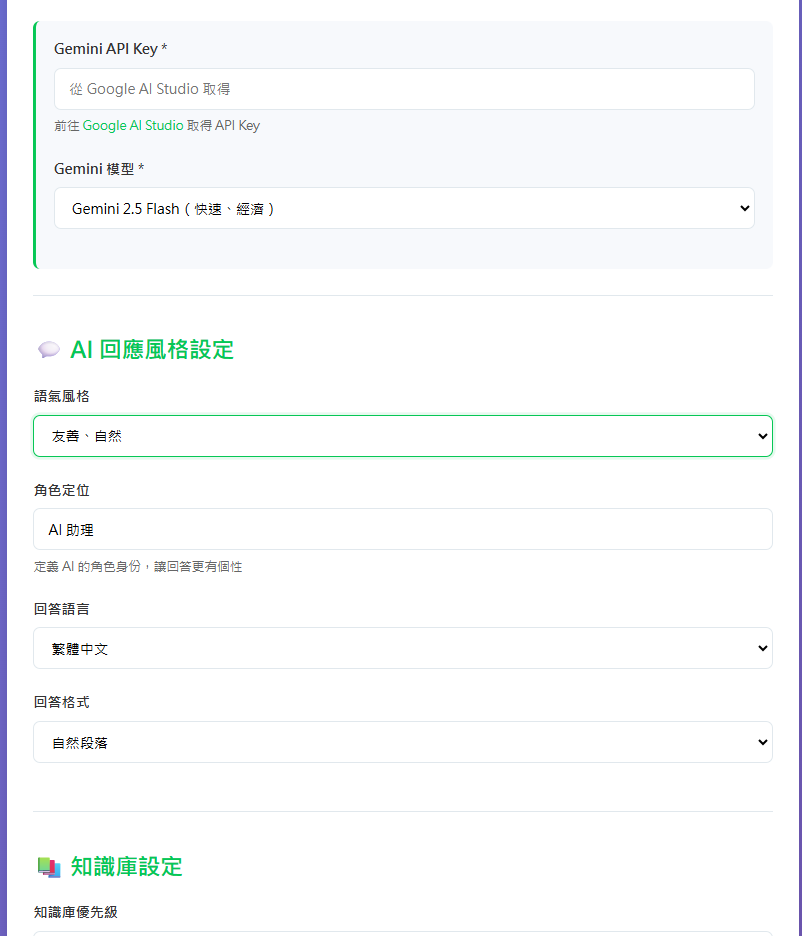

選擇你的 Bot 說話的風格：
| 風格 | 說明 | 適用場景 |
|---|---|---|
| 友善、自然 | 像朋友般親切 | 一般客服、社群互動 |
| 專業、學術 | 嚴謹正式 | 教育、技術支援 |
| 輕鬆、幽默 | 活潑有趣 | 娛樂、社交型 Bot |
| 簡短、扼要 | 直接明瞭 | 快問快答 |
| 熱情、鼓勵 | 充滿正能量 | 學習輔導、激勵 |
定義 AI 要扮演什麼身分：
通用型助手，適合大多數場景
正式、有耐心、以解決問題為導向
引導式回答，幫助學生思考
例如：「專業健身教練」「溫柔的幼教老師」

在生成器中可以自由調整這些選項
像一般對話那樣，最常見的格式。
將答案整理成重點清單。
決定 AI 在回答時有多依賴你提供的試算表資料：
優先使用知識庫內容，找不到才補充 AI 知識。
✓ 適合大多數情境
只使用知識庫中的資訊，不添加額外內容。
⚠ 適合法規、醫療等需要一致性的場景
靈活參考知識庫，也可加入 AI 知識。
◐ 適合聊天型 Bot 或創意顧問
當使用者問了知識庫中沒有的問題時，AI 會先說這段文字：
控制 AI 回答的穩定性與創意性：
穩定保守
每次問同樣問題，答案幾乎相同。
✓ 適合客服機器人
創意多變
回答更有變化，但可能不太可預測。
◐ 適合聊天夥伴
限制 AI 每次回答的字數上限：
| 設定值 | 約等於 | 適用場景 |
|---|---|---|
| 1024 | 600-800 中文字 | 簡短回答 |
| 2048（推薦） | 1200-1500 中文字 | 一般對話 |
| 4096 | 2400-3000 中文字 | 詳細說明 |
© 2026 自己架設 AI - 零基礎到大師 | Made with 曾慶良(阿亮老師) ❤️